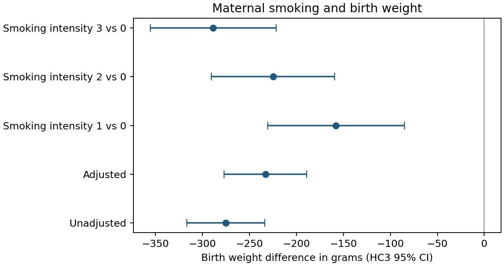

Question
How does the association between maternal smoking and birth weight change after measured covariate adjustment?
What I did
I fit unadjusted and covariate-adjusted linear regressions on a common complete-case cohort and used HC3 confidence intervals to compare the smoking association before and after adjustment.
Main finding
The unadjusted difference was −275 g (HC3 95% CI −317 to −234). Adjusting for maternal age, race, education, marital status, and alcohol use gave −233 g (−277 to −189). Both fits use the same 4,642 observations.

Important limitations
This is observational evidence. Adjustment does not eliminate unmeasured confounding, exposure misclassification, or selection bias. Intensity categories are treated as categorical; the analysis does not claim a causal dose-response relationship. No formal sensitivity analysis was performed.
For the portfolio, I kept missing smoking values separate, used the same complete-case cohort for both models, and added HC3 intervals. Revision details on GitHub →